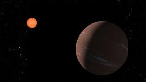

The new 'super-Earth' or TOI-715 b is comparable to that of our own Earth for countless reasons hence receiving its same. Below is listed the features that make it the new 'super-Earth'.
Planet TOI-715 b nicknamed the new 'super-Earth' is closely identical to our own Earth as it is potentially habitable. Planet TOI-715 b is positioned in the 'conservative' habitable zone of its parent star; a zone in which temperatures allow liquid water to exist on its surface.
What are its possibilities of being habitable?